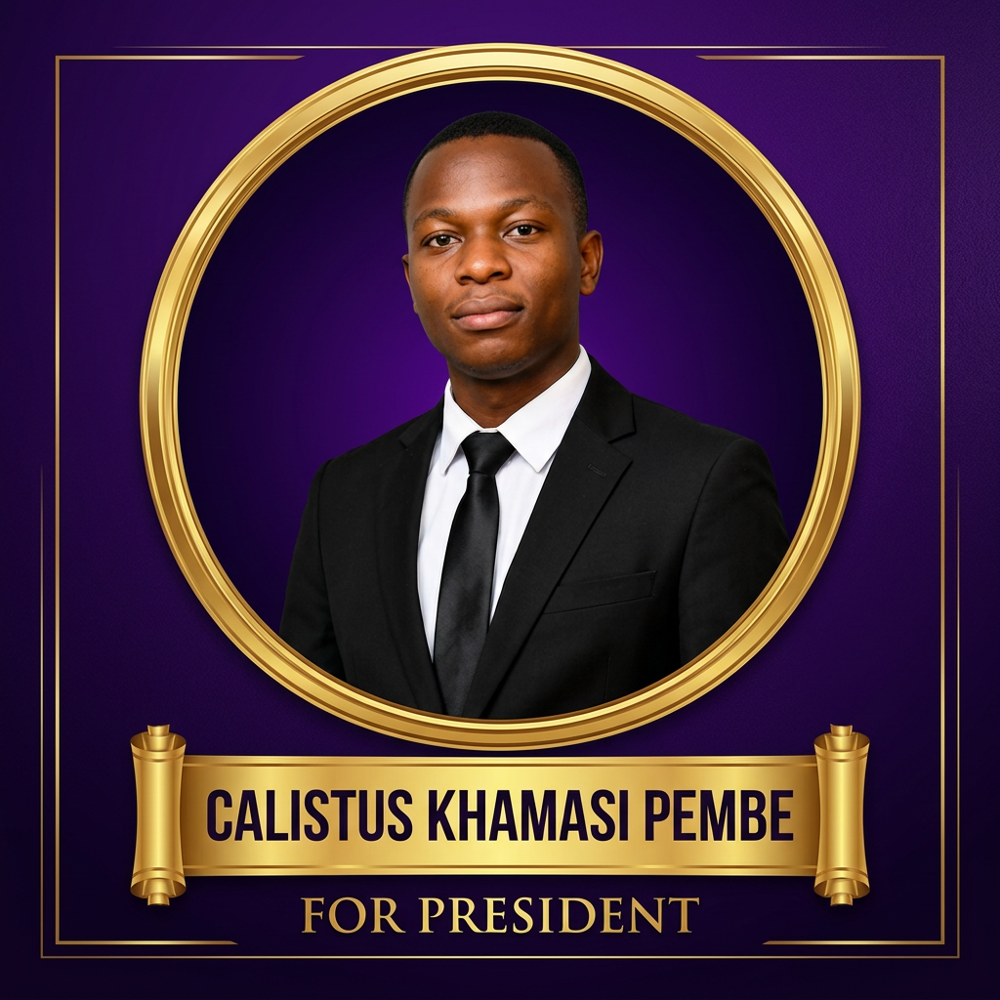

SLCMC SRC ELECTIONS 2026/2027
HEAL MOVEMENT
Health • Empowerment • Advocacy • Leadership
Every Voice Counts. Every Student Matters.
Meet Our Team
Every Voice Counts. Every Student Matters.
Meet Our Team
Together we are building a stronger student community through Health, Empowerment, Advocacy and Leadership. We believe every student deserves quality representation, academic excellence, mental wellness, sports development, innovation, transparency and servant leadership.
Meet the dedicated candidates running under the HEAL Movement banner. Each candidate is committed to serving the student community with integrity and passion.



Health: We are committed to promoting physical, mental, and emotional wellness for all students.
Empowerment: We believe in giving students the tools and platforms to voice their opinions and make decisions that affect their lives.
Advocacy: We stand up for student rights and work to address the challenges facing our community.
Leadership: We foster transparent, accountable, and servant leadership that puts students first.
Check back soon for photos and videos from our campaign events and student engagements.
Have questions or want to get involved with the HEAL Movement? Reach out to us!
Email: idahmutabari@gmail.com
Phone: 0798478376